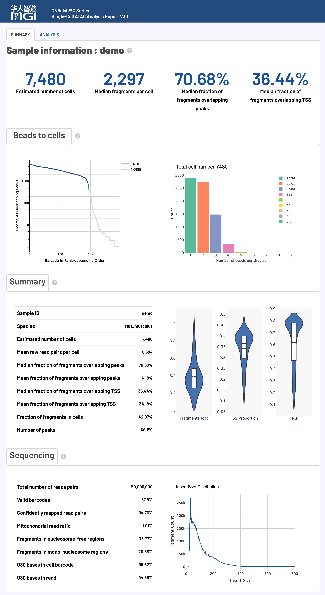

scATAC 分析输出¶
输出范围：目录树描述常规完成运行的结果；可选文件取决于启用模块与阶段完成状态。下文质量参考区间是判读建议，不是软件内置的通过/失败规则，应以本次配置阈值和报告状态为准。
单细胞 ATAC 测序分析输出文件说明
概述 ¶
单细胞 ATAC 测序分析完成后，会在指定的输出目录中生成标准化的文件和子目录结构，用于染色质可及性分析和表观基因组学研究。矩阵与片段文件可按相应格式导入 Signac、ArchR 等工具；读取示例参见结果分析。
核心交付物速览¶
下表汇总了 scATAC 分析的主要产物、文件格式、核心用途以及推荐的下游生态对接：
| 交付产物与核心文件 | 格式 | 主要用途与下游生态对接 |
|---|---|---|
| 真实细胞片段文件 • filtered.fragments.tsv.gz• filtered.fragments.tsv.gz.tbi |
BED (TSV.GZ)TBI 索引 |
经过细胞质控过滤后的高质量片段 BED 格式文件，下游分析的核心首选输入。 • 推荐工具: Signac ( CreateChromatinAssay) / ArchR (createArrowFiles) |
| 全量比对片段文件 • fragments.tsv.gz• fragments.tsv.gz.tbi |
BED (TSV.GZ)TBI 索引 |
包含所有比对到基因组的唯一片段坐标与细胞归属，用于全量回溯与背景评估。 • 生态对接: 支持 IGV、UCSC 等基因组浏览器直接作为 BED 轨迹加载。 |
| 染色质峰定量矩阵 • filtered_peak_bc_matrix/• filtered_peak_bc_matrix.h5 |
MEX 稀疏矩阵HDF5 (H5) |
过滤后的细胞染色质开放峰（Peak）定量计数矩阵。 • 注意口径: 矩阵数值默认统计 Cutsite（两端切割位点），灵敏度更高；切勿使用列和（ colSums）充当 Fragment 测序深度过滤。 |
| 未过滤原始峰矩阵 • raw_peak_bc_matrix/• raw_peak_bc_matrix.h5 |
MEX 稀疏矩阵HDF5 (H5) |
包含所有候选微珠/液滴与背景噪音的原始峰计数矩阵，用于自定义过滤与质控复核。 |
| 细胞元数据明细 • singlecell.csv |
CSV |
记录每个细胞条形码的片段数、峰数、TSS/Peak 区域片段数、Cutsite 计数及真实细胞识别。 • 质控筛选: 统一根据 is_cell_barcode == 1 筛选真实细胞。 |
| 实验指标汇总 • metrics_summary.xls |
TSV 文本 |
实验整体测序质量、比对率、细胞数、中位片段数、TSS 富集等全局统计指标。 • 读取规范: 制表符文本，R 用 read.delim()，Python 用 pd.read_csv(sep='\t')。 |
| 交互式网页报告 • <sample>_scATAC_report.html |
HTML |
一站式可视化质控与分析报告，交互式查看细胞排序曲线、TSS 富集模式、片段长度分布及细胞聚类等。 • 打开方式: 无需网络，双击在任意现代桌面浏览器中直接打开。 |
| 基因组比对记录 • alignment.fragments.sorted.tagged.bam• alignment.fragments.sorted.tagged.bam.bai |
BAMBAI / CSI |
携带纠错细胞标签（CB, CR）的基因组坐标排序比对文件。• 生成条件: 分析需添加 --need_bam 参数；支持 IGV 基因座比对复核。 |
| 峰注释 • peak_annotation.tsv |
TSV |
过滤后 peaks 的基因关联（可选），详见注释字段。 |
| 可选诊断 • cell_classification.csv• whitelist_contamination*.json |
CSV / JSON |
双物种分类及 C4 白名单诊断，生成时交付。 |
输出目录结构 ¶
outs/
├── filtered.fragments.tsv.gz # 质控过滤后的高质量细胞片段文件 (下游分析首选)
├── filtered.fragments.tsv.gz.tbi # 过滤后片段文件的 Tabix 索引
├── fragments.tsv.gz # 全量比对片段文件 (BED 格式)
├── fragments.tsv.gz.tbi # 全量片段文件的 Tabix 索引
├── filtered_peak_bc_matrix/ # 过滤后的染色质峰定量矩阵目录 (MEX 格式)
│ ├── barcodes.tsv.gz # 高质量真实细胞 ID 列表
│ ├── peaks.bed.gz # 识别峰的基因组坐标 (BED 格式)
│ └── matrix.mtx.gz # 稀疏峰计数矩阵 (单空格分隔，Cutsite 计数)
├── filtered_peak_bc_matrix.h5 # 过滤后的峰定量矩阵 (单文件 HDF5 格式)
├── raw_peak_bc_matrix/ # 未过滤的原始峰定量矩阵目录 (MEX 格式)
│ ├── barcodes.tsv.gz
│ ├── peaks.bed.gz
│ └── matrix.mtx.gz
├── raw_peak_bc_matrix.h5 # 未过滤的原始峰定量矩阵 (单文件 HDF5 格式)
├── peak_annotation.tsv # 过滤后峰的基因注释（可选）
├── cell_classification.csv # 双物种分类（可选，位于输出根目录）
├── whitelist_contamination.json # 白名单诊断（可选）
├── whitelist_contamination_cells.json # 细胞级白名单诊断（可选）
├── singlecell.csv # 细胞级别质控与元数据汇总表 (含 is_cell_barcode)
├── metrics_summary.xls # 实验质控与分析质量指标汇总表 (制表符分隔 TSV)
├── <sample>_scATAC_report.html # 交互式综合网页质控与分析报告
├── alignment.fragments.sorted.tagged.bam # 坐标排序的比对 BAM 文件 (启用 --need_bam 时输出)
└── alignment.fragments.sorted.tagged.bam.bai # 比对索引文件 (超长染色体可为 .csi)
raw/filtered peak 矩阵同时提供 H5。矩阵默认统计 cutsite；cell calling、FRIP 和 TSS 比例仍按唯一 fragment 统计。BAM 需启用 --need_bam，索引可为 BAI 或 CSI。
文件详细说明 ¶
ATAC片段和峰文件 ¶
核心内容: ATAC-seq 片段信息和峰识别结果，包含完整的染色质可及性数据和细胞条形码标记。
fragments.tsv.gz¶
fragments.tsv.gz 是一个包含 ATAC-seq 片段信息的压缩 TSV 文件，是进行下游分析的核心数据之一。
-
用途:
- 染色质可及性分析: 精确定位每个开放染色质区域的基因组坐标。
- 数据可视化: 可直接在 IGV、UCSC 等基因组浏览器中作为 BED 文件加载。
- 下游工具输入: 兼容 ArchR、Signac 等主流单细胞分析工具。
-
内容与格式:
- 文件为 BED-like 格式，每行代表一个唯一的 ATAC-seq 片段。
-
包含以下 5 列信息：
字段名 详细描述 chrom参考基因组染色体名称，标识片段所在的染色体位置 chromStart片段在染色体上的调整起始位置（0-based 坐标系统），经过转座酶切割位点修正 chromEnd片段在染色体上的调整结束位置（不包含该位置），经过转座酶切割位点修正 barcode细胞 ID 标识符，对应 BAM 文件中的 CB标签，用于将片段归属到特定细胞readSupport与该片段相关的总读段对数（包括唯一和重复读段）
-
坐标调整:
- 为精确定位转座酶切位点，片段区间经过调整：起始位置从最左端比对位置向前移动 4 bp，结束位置从最右端比对位置向后移动 5 bp。
fragments.tsv.gz.tbi¶
fragments.tsv.gz 文件的 Tabix 索引。
- 核心用途:
- 快速数据访问: 允许对大型
fragments.tsv.gz文件进行快速的、基于基因组区间的查询，而无需读取整个文件。 - 工具性能优化: 被 ArchR、Signac、IGV 等工具用于快速加载和检索特定染色体区域的数据。
- 快速数据访问: 允许对大型
- 格式: 由
tabix工具生成的标准二进制索引文件。
filtered.fragments.tsv.gz¶
这是经过细胞质量控制和过滤后的 ATAC-seq 片段文件，是 fragments.tsv.gz 的子集，仅包含高质量细胞的片段。
- 核心用途:
- 核心下游分析: 这是进行细胞聚类、差异可及性分析等下游分析的推荐输入文件。
- 信噪比提升: 由于去除了低质量细胞和背景噪音，使用此文件可提高分析结果的准确性和信噪比。
- 内容与格式:
- 文件格式与
fragments.tsv.gz完全相同（压缩的 BED-like TSV），包含相同的 5 列信息。 - 仅包含通过细胞过滤算法（基于 TSS 富集和峰区域覆盖的片段数）被判定为真实细胞的片段。
- 文件格式与
filtered.fragments.tsv.gz.tbi¶
filtered.fragments.tsv.gz 文件的 Tabix 索引。
- 核心用途: 确保在使用过滤后的片段文件时，下游工具（如 ArchR、Signac）能够快速访问特定基因组区域的数据。
- 格式: 标准二进制 Tabix 索引文件。
alignment.fragments.sorted.tagged.bam¶
这是包含所有具有有效条形码（valid barcode）并且成功比对的片段的 ATAC-seq 比对结果文件。
- 核心用途:
- 比对结果查看与可视化: 可用于 IGV 等基因组浏览器进行结果可视化，检查特定基因座的比对情况。
- 自定义分析: 为需要直接操作比对级别数据的用户提供原始输入。
- 内容与格式:
- 采用国际标准的 BAM (Binary Alignment Map) 格式。
- 文件已按基因组坐标排序，并建立了索引（
.bai文件），便于快速随机访问。 -
关键 TAG 字段说明：
标签 (TAG) 类型 描述 CBZ 经过错误校正和细胞合并处理后的细胞条形码标识符 CCZ 经过错误校正的细胞条形码序列 CRZ 测序仪报告的原始细胞条形码序列
alignment.fragments.sorted.tagged.bam.bai¶
alignment.fragments.sorted.tagged.bam 文件的索引。
- 核心用途: 允许 IGV、Samtools 等工具在无需完整加载 BAM 文件的情况下，快速跳转和读取任意基因组区域的比对数据。
- 格式: 标准 BAI (BAM Index) 格式（超长染色体参考基因组时生成
.csi）。
峰矩阵文件 ¶
核心内容: 单细胞峰信号计数矩阵，分为原始数据和质控过滤后数据，采用标准稀疏矩阵格式。
核心注意：矩阵计数口径（Cutsite）与细胞质控指标（Unique Fragment）
- Cutsite 计数口径：峰矩阵（
filtered_peak_bc_matrix）中的数值为经过 Tn5 转座酶插入 9-bp 偏移修正后的两端切割位点计数（cutsite），能够以最高灵敏度反映局部染色质开放信号。 - Fragment 质控口径：
singlecell.csv中的peak_region_fragments、FRIP（Fraction of Reads in Peaks）、TSS 富集比例以及 Cell Calling 过滤，严格基于去重后的唯一片段（unique fragments）。 - 避坑警示：在 R（Signac）或 Python 中，切勿使用矩阵列求和（如
colSums(mtx)）作为细胞的 fragment 测序深度进行质控过滤！理论上 1 fragment ≈ 2 cutsites，且两者的统计口径和生物学定义截然不同。 - 分隔符规范：3.2 版本起，
matrix.mtx.gz采用单空格（Single Space）分隔，自写解析脚本请使用line.split()（匹配任意空白字符）或标准Matrix::readMM。
过滤后的峰矩阵 (filtered_peak_bc_matrix/)¶
包含经过高质量细胞过滤后的峰计数矩阵，是进行下游定量分析的核心数据。
- 核心用途:
- 下游定量分析: 作为细胞聚类、差异可及性分析、转录因子结合预测等分析的主要输入。
- 高质量数据: 只包含被鉴定为真实细胞的条形码，确保分析结果的准确性。
-
内容与格式:
-
采用标准的 Matrix Market Exchange (MEX) 格式，由以下三个压缩文件组成：
文件名 内容描述 barcodes.tsv.gz细胞 ID 列表，标识通过质控筛选的高质量真实细胞，每行对应矩阵的一列 peaks.bed.gz峰区域位置信息文件，BED 格式存储（染色体、起始位置、结束位置），对应矩阵的行 matrix.mtx.gz峰区域计数矩阵，采用 Matrix Market 稀疏格式，记录非零元素的行、列索引及 Cutsite 数值
-
-
格式优势:
- 空间高效: 稀疏矩阵格式（
.mtx）仅存储非零元素，极大节省了存储空间。 - 高度兼容: MEX 格式是单细胞社区的标准，兼容 Signac、ArchR、Scanpy 等主流分析工具。
- 空间高效: 稀疏矩阵格式（
原始峰矩阵 (raw_peak_bc_matrix/)¶
包含所有检测到的细胞条形码（未经过滤）的原始峰计数矩阵。
- 核心用途: 用于评估细胞过滤算法的效果，或根据研究人员的自定义标准进行定制化质控与过滤。
- 内容与格式: 采用标准的 MEX 格式，文件组成与
filtered_peak_bc_matrix/目录相同，包含所有检测到的条形码（含真实细胞与背景液滴）。
分析指标汇总 ¶
核心内容: 实验质量评估和统计指标汇总，提供完整的数据质量控制信息。
metrics_summary.xls¶
采用制表符分隔（TSV）格式的关键分析指标汇总表，提供了对实验整体质量的结构化评估。
- 核心用途: 快速评估测序数据质量、比对效率、细胞鉴定结果等核心指标。
-
内容分类: | 指标类别 | 包含内容 | | :--- | :--- | | 基础测序统计 | 原始测序读段对数、有效条形码比例、Q30 碱基质量等基础测序指标 | | 细胞鉴定指标 | 估计细胞数量、每细胞中位片段数、峰区域片段占比、TSS 区域片段占比、识别峰数量等 | | 比对与特征指标 | 基因组比对率、线粒体比例、无核小体区域比例、单核小体区域比例等 |
-
读取方式: 文本格式文件，推荐在 R 中使用
read.delim("metrics_summary.xls")，在 Python 中使用pd.read_csv("metrics_summary.xls", sep=" ")。详细指标释义与推荐质量基准请参见 网页报告释义。
峰注释¶
peak_annotation.tsv 为过滤后 peaks 的制表符注释表。仅在过滤矩阵的 peaks.bed.gz、参考 GTF 可用且注释成功时发布；注释失败不将其视为必需输出。一个 peak 可关联多个基因，因此行数不保证与矩阵特征数相等。
| 字段 | 含义 |
|---|---|
chrom、start、end |
Peak 坐标，起点从 0 开始，终点不包含在区间内 |
gene、gene_id |
关联基因的名称与参考注释 ID |
distance |
关联 TSS 到 peak 最近碱基的有符号距离；重叠为 0，转录方向下游为正 |
peak_type |
启动子/远端关联，或基因间区/未注释结果 |
genomic_region |
基因组区域分类 |
gene_biotype、tss_source |
GTF 基因类型与所选 TSS 的注释来源 |
其他可选文件：双物种分类结果 cell_classification.csv 位于 ATAC 输出根目录；C4 白名单/低靶向策略（audit 或 apply）产生诊断时，交付 whitelist_contamination.json 和 whitelist_contamination_cells.json。物种分类中的 Multiplet 表示跨物种混合候选，Unassigned 表示未确定归属，不应视为已证实的生物学双胞标签。
singlecell.csv¶
单细胞级别的多维度质控信息表，采用 CSV 格式存储。
- 包含字段:
Cell,totalFrags,fragments,mt_region_fragments,chloroplast_region_fragments,TSS_region_fragments,blacklist_region_fragments,peaks_number,peak_region_fragments,peak_region_cutsites,is_cell_barcode,Cellbarcode。 - 核心用途:
- 精细化质控: 支持研究人员基于
is_cell_barcode提取真实细胞，或根据自定义片段数、TSS 富集比例等指标进行二次质控。 - 下游元数据对接: 可直接作为 Signac、ArchR 或 Scanpy 对象的细胞元数据（Cell Metadata /
adata.obs）。
- 精细化质控: 支持研究人员基于
- 说明:
peak_region_fragments与peak_region_cutsites分别记录片段数与切割端点计数；仅配套工具输出该端点统计时才有值，缺失不应视作 0。
totalFrags 为包含重复支持的片段读段对数，fragments 为去重后的唯一片段数。报告汇总 FRIP/TSS 比例以核内片段为分母；Targeting 散点图则以全部唯一 fragments 为分母，归一化 TSS 富集曲线是另一种信号。空片段 gzip 文件可能没有 .tbi 索引。ATAC 聚类对象位于处理中间目录，不作为 outs/analysis/ 文件包发布。
*_scATAC_report.html¶
采用 HTML 网页格式的交互式综合分析报告。
- 核心用途:
- 结果可视化: 以交互式图表展示质控结果、细胞聚类、TSS 富集等关键分析结果。
- 便捷分享: 单个离线 HTML 文件，无需依赖网络，双击即可在任意桌面浏览器中打开。
- 报告模块: | 报告模块 | 内容描述 | | :--- | :--- | | 交互式图表 | 质控指标、细胞条形码排序、TSS 富集曲线、片段长度分布、细胞聚类等交互式可视化图表 | | 统计汇总 | 关键性能指标的数值汇总与状态评估（推荐 / 可接受 / 需优化） | | 详细解读 | 各项质控指标的计算口径、生物学意义及异常排查建议 |
文件格式说明 ¶
技术规范: 输出文件采用的标准格式详细说明。
Matrix Market 格式 (.mtx.gz) ¶
Market Exchange Format (MEX) 是单细胞分析中用于存储稀疏计数矩阵的标准格式，具有空间高效和高度兼容的优点。
- 核心优势:
- 空间高效: 稀疏矩阵仅存储非零元素，对于通常超过 95% 为零值的单细胞 ATAC 数据，可极大节省磁盘与内存开销。
- 高度兼容: 作为国际标准格式，可被 Signac、ArchR、Scanpy 等主流分析工具直接解析。
-
文件组成:
文件名 格式描述 matrix.mtx.gz压缩的稀疏矩阵文件。文件头包含矩阵维度与非零项总数，后续每行记录一个非零元素的位置（行/列索引）和数值 barcodes.tsv.gz压缩的细胞条形码文件。每行对应一个细胞 ID，行号对应矩阵的列 peaks.bed.gz压缩的特征（峰）文件。每行对应一个峰的 BED 坐标，行号对应矩阵的行
网页报告释义 ¶
概述：HTML 网页报告提供单细胞 ATAC 测序结果的可视化摘要和指标说明，覆盖实验质量与下游分析相关的关键指标。
质量评估原则与阅读建议
- 整体评估：HTML 网页报告提供单细胞 ATAC 测序结果的可视化摘要与质控分析，覆盖细胞识别、测序质量、片段长度分布、TSS 富集、Peak 区域分布及细胞聚类等核心环节。
- 基准参考：下述质量参考标准基于常规组织样本拟定。不同组织类型（如实体肿瘤、原代神经组织、冻存样本）、细胞状态与测序深度存在天然异质性，实际评估时请结合实验背景综合判断。
- 阅读路径：建议按照报告展示顺序依次核对测序质量、比对与线粒体比例、TSS 富集曲线及 Peak 内片段占比，最后结合降维聚类效果评估染色质开放信号的生物学合理性。
报告主要内容与结构¶

核心分析指标详解¶
细胞指标 (Cell Metrics) ¶
核心功能: 细胞识别、质量评估和染色质可及性统计，提供实验整体效果的关键指标。
质量参考标准：
| 指标名称 (Metric) | 推荐标准 (Optimal) | 可接受区间 (Acceptable) | 需关注/优化 (Suboptimal) |
|---|---|---|---|
| Median fragments per cell | ≥ 10,000 | 2,000 – 10,000 | < 2,000 |
| Median fraction of fragments overlapping peaks | ≥ 30% | 15% – 30% | < 15% |
| Median fraction of fragments overlapping TSS | ≥ 20% | 10% – 20% | < 10% |
| Fraction fragments in cells | ≥ 50% | 20% – 50% | < 20% |
详细指标解释与算法：
| 指标名称 (Metric) | 统计口径与算法计算 | 判读指导与排查要点 |
|---|---|---|
| Estimated number of cells (估计细胞数量) |
从测序数据中鉴定出的有效真实细胞条形码总数。通过合并同液滴条形码并基于片段数及 TSS 富集进行细胞识别过滤。 | 综合上样细胞数与细胞产出率判断。若显著低于预期，建议检查上样细胞活率、微流控包裹稳定性或文库转化效率。 |
| Species (物种信息) |
分析所采用的物种名称及参考基因组版本信息。 | 用于核验样本物种与参考基因组配置的一致性，是溯源比对异常的第一核对项。 |
| Median fragments per cell (每细胞中位片段数) |
真实高质量细胞中包含的唯一有效 ATAC 片段数中位数。 | 衡量单细胞测序深度与捕获灵敏度的核心指标。推荐 ≥ 10,000（最低 ≥ 2,000）；数值过低会直接影响 peak calling、分群及差异可及性分析的灵敏度。 |
| Mean raw read pairs per cell (每细胞平均原始读段对数) |
原始测序读段对总数 / 估计细胞数量。 | 评估文库测序深度的宏观指标。建议 ≥ 25,000 read pairs/cell，以保证染色质开放区域具备充分的测序覆盖。 |
| Fraction overlapping peaks (片段重叠峰区域比例 / FRIP) |
对识别细胞分别计算 peak_region_fragments / 核内唯一片段数 后取中位数。核内片段数为 fragments − mt_region_fragments − chloroplast_region_fragments，计算时分母至少取 1。 |
评估 ATAC 信号特异性与信噪比的金标准。推荐 ≥ 30%；< 15% 提示背景游离 DNA 污染严重、细胞核破损或转座反应特异性欠佳。 |
| Fraction overlapping TSS (TSS 区域片段重叠比例) |
对识别细胞分别计算 TSS ±1,000 bp 区域的 TSS_region_fragments / 核内唯一片段数 后取中位数；分母与峰重叠比例汇总一致。 |
反映启动子可及性信号的富集强度。推荐 ≥ 20%；< 10% 提示文库非特异性背景过高或染色质片段化过度。 |
| Fraction of fragments in cells (细胞内片段比例) |
识别细胞的 totalFrags 之和 / 全表 totalFrags 之和；统计支持片段的读段对（含重复支持），不是去重后的 fragments。 |
衡量真实细胞信号与背景空滴/游离 DNA 信号的比率。推荐 ≥ 50%；过低说明反应液中存在大量游离染色质碎片污染。 |
| Number of peaks (识别峰数量) |
聚合所有高质量细胞信号后，在全基因组范围内鉴定出的开放染色质峰（Peaks）总数。 | 典型范围在 50,000 – 150,000 之间。峰数量直接受细胞类型异质性、细胞总数及测序深度影响。 |
测序指标 (Sequencing Metrics) ¶
核心功能: 测序数据的基础质量评估，包括条形码识别率、比对质量和测序准确性。
质量参考标准：
| 指标名称 (Metric) | 推荐标准 (Optimal) | 可接受区间 (Acceptable) | 需关注/优化 (Suboptimal) |
|---|---|---|---|
| Valid barcodes | ≥ 80% | 70% – 80% | < 70% |
| Q30 bases in barcode | > 85% | 75% – 85% | < 75% |
| Q30 bases in read | > 85% | 75% – 85% | < 75% |
| Confidently mapped read pairs | > 80% | 50% – 80% | < 50% |
详细指标解释与算法：
| 指标名称 (Metric) | 统计口径与算法计算 | 判读指导与排查要点 |
|---|---|---|
| Total number of reads pairs (测序读段对总数) |
样本测序产生的双端原始读段对（Read Pairs）总量。 | 实验原始数据量的直接体现，是评估测序深度和实验通量的基准。 |
| Valid barcodes (有效条形码比例) |
条形码序列可精准匹配至预设白名单（含容错校正）的读段占总测序读段的比例。 | 推荐 ≥ 80%。过低通常提示条形码区域测序质量欠佳、文库构建引物异常或测序周期偏离。 |
| Confidently mapped read pairs (基因组比对率) |
成功唯一比对到参考基因组上的读段对占总读段的比例。 | 推荐 ≥ 80%。低于 50% 时需优先排查：样本外源污染、物种参考基因组选择错误，或高重复序列导致的比对异常。 |
| Mitochondria reads ratio (线粒体 reads 比例) |
比对至线粒体基因组的读段占总比对读段的百分比。 | 评估细胞核制备纯度与核膜完整性的核心指标。线粒体 DNA 缺乏核小体保护极易被 Tn5 切割；通常推荐 < 10%，> 20% 提示细胞破损裂解严重。 |
| Nucleosome-free regions (无核小体区域比例) |
长度 < 147 bp 的转座插入片段占总片段的百分比。 | 直接反映启动子与顺式调控元件等开放染色质区域的有效信号。推荐 > 40%；过低说明转座酶消化不足或染色质凝集。 |
| Mono-nucleosome regions (单核小体区域比例) |
长度介于 147 – 294 bp 之间（缠绕单个核小体）的片段占比。 | 与无核小体片段比例互补，共同反映核小体相位结构的完整性。 |
| Q30 bases in barcode (条形码 Q30 碱基比例) |
细胞条形码序列中测序质量值 ≥ 30（错误率 < 0.1%）的碱基占比。 | 评估单细胞标签识别的物理测序质量，通常应 > 85%。 |
| Q30 bases in read (读段 Q30 碱基比例) |
基因组插入片段测序读段中质量值 ≥ 30 的碱基占比。 | 评估染色质片段测序本身的保真度，直接关系到基因组精准比对和 Peak 定位。 |
交互式可视化图表解读¶
网页报告内置了多维度交互式可视化图表，全面覆盖细胞识别质控、染色质构象特征及聚类分群分析。
1. 细胞条形码排序图 (Barcode Rank Plot)¶
图表功能：展示所有细胞条形码按峰区域片段数降序排列的累计分布曲线，用于直观区分高质量真实细胞与背景噪音。

如何解读：
- 坐标轴定义:
- X 轴 (Barcode Rank): 所有细胞条形码按片段数降序排列（对数刻度）。左侧为高片段数条形码，右侧为低片段数背景。
- Y 轴 (Fragment Counts): 各条形码对应的峰区域片段总数（对数刻度）。
- 拐点（Knee Point）判定:
- 图中曲线通常会出现陡峭的下折拐点。
- 拐点左侧的 蓝色区域 代表被算法判定为高质量真实细胞的条形码。
- 拐点右侧的 灰色区域 代表背景游离片段与空液滴。
- 交互特征: 鼠标悬停可查看条形码位次与具体片段数值；蓝色渐变区域代表真实细胞在不同局部的密度分布。
2. 液滴微珠分布图 (Droplet Beads Distribution)¶
图表功能：展示真实细胞反应液滴中捕获微珠（Beads）的数量分布情况。
如何解读：
- 理论分布: 微流控液滴包裹过程中，液滴内微珠数量理论上遵循泊松分布，反映微流控反应体系的随机捕获特征。
- 实验关联: 实际分布受测序饱和度、液滴生成均一性及细胞悬液浓度等实验因素影响。
3. 细胞数据分布图 (Cell Data Distribution)¶
图表功能：通过三个独立的小提琴图（Violin Plots），分别展示高质量细胞在 片段数 (Fragments)、TSS 富集比例 (TSS Proportion) 和 Peak 区域片段比例 (Peak Proportion) 上的分布形态。
如何解读：
- 小提琴图形态: 图表宽度代表该数值区间的细胞密度，腹部越饱满表示细胞聚集度越高；内部箱线图展示中位数与四分位范围。
- 指标解读:
- 片段数 (Fragments): 评估细胞文库测序深度与捕获丰度，中心位置越高说明细胞质量越优。
- TSS 富集比例 (TSS Proportion): 反映转录调控区域的信号特异性，中心分布越高说明启动子开放信号越强。
- Peak 区域片段比例 (Peak Proportion): 反映染色质开放峰的整体富集度，中心分布越高说明信噪比越好。
4. 片段长度分布图 (Fragment Length Distribution)¶
图表功能：展示去重后 ATAC-seq 片段的插入长度（Insert Size）频率分布曲线，是评估细胞核完整性与染色质天然构象的“金标准”。
如何解读：
- 周期性峰特征:
- < 147 bp（第一高峰）: 代表无核小体区域 (Nucleosome-free regions, NFR) 片段，直接富集启动子与活跃顺式调控元件。
- ~200 bp 左右（第二峰）: 代表缠绕单核小体的片段。
- ~400 bp / ~600 bp（后续周期峰）: 代表跨越双核小体及多核小体的片段。
- 质控判读:
- 优质样本: 呈现清晰的 ~200 bp 阶梯状周期性波动，且 NFR 尖峰突出。表明细胞核结构完整，染色质构象保存良好。
- 质量异常: 曲线平滑无周期性起伏，通常提示细胞核破裂严重、过度裂解或发生 DNA 非特异性降解。
5. 细胞聚类分析图 (Cluster Analysis)¶
图表功能：通过潜变量语义分析（LSI）降维与 UMAP 投影，将染色质可及性模式相似的细胞投射在二维空间中，以揭示潜在表观亚群。

如何解读：
- 左图（细胞亚群分群）: 每个散点代表一个细胞，不同颜色对应不同的表观聚类（Cluster），空间距离越近代表染色质开放特征越相似。
- 右图（片段深度分布）: 在相同 UMAP 空间以颜色渐变展示细胞片段数深度，用于复核聚类结果是否受到测序深度偏差的技术干扰。
6. 转录起始位点富集图 (TSS Enrichment Profile)¶
图表功能：聚合所有基因转录起始位点（TSS）附近 ±1,000 bp 的 ATAC 片段切割频率，量化开放染色质信号的信噪比。
如何解读：
- 坐标轴: X 轴为相对于 TSS 的基因组距离（0 为 TSS 中心）；Y 轴为归一化切割信号强度。
- 信号形态: 高质量样本在 TSS 中心（0 点）呈现对称的高耸尖峰，两侧信号快速降至背景水平。
- 量化指标: TSS Enrichment Score 越高（推荐 > 4–6）表明文库信噪比越好；若曲线扁平无峰，高度提示染色质制备失败或文库非特异性背景过高。
7. 单细胞靶向图 (Single Cell Targeting Plot)¶
图表功能：以双变量散点图展示各细胞条形码的总片段数（X 轴，对数刻度）与 TSS 富集分数（Y 轴），用于评估细胞识别过滤的区分度。
如何解读：
- 右上角区域: 高片段数 + 高 TSS 富集分数，代表高质量真实细胞群体。
- 左下角区域: 低片段数 + 低 TSS 富集分数，代表背景游离噪音与空液滴。
- 判读建议: 理想样本中两组条形码群体应具有清晰的双峰分界。
8. 测序饱和度曲线图 (Saturation Curve)¶
图表功能：评估当前测序深度是否充分及文库复杂度释放情况。
如何解读：
- 坐标轴: X 轴为每细胞平均测序读段对数，Y 轴为每细胞中位唯一片段数。
- 趋势判读:
- 线性上升期: 曲线坡度陡峭，增加测序量能显著获取更多新的唯一片段。
- 饱和平台期: 曲线逐渐走平，表示文库复杂度基本完全释放，继续加深测序的边际增益递减。通常 20%–50% 的重复率是测序深度与经济成本的良好平衡点。
9. 微珠相似性排序图 (Bead Similarity Ranking)¶
图表功能：在多微珠反应体系中，通过微珠间共享片段的 Jaccard 相似度来合并归属于同一液滴的微珠条形码。
如何解读：
- 坐标轴: X 轴为所有微珠对按相似度降序排列的位次，Y 轴为 Jaccard 相似度（对数刻度）。
- 判定区域:
- 蓝色区域: 相似度高于 Otsu 算法计算阈值的微珠对，判定为来源于同一细胞反应液滴，分析中自动合并。
- 灰色区域: 相似度低于阈值，判定为不同细胞来源，保持独立。
10. 衍生算法指标释义 (Additional Algorithmic Metrics)¶
| 指标名称 (Metric) | 算法定义与生信统计 | 判读指导与质控建议 |
|---|---|---|
| Percent duplicates (重复序列百分比) |
被判定为 PCR 重复的片段占总比对片段的比例。 | 反映文库复杂度与测序深度饱和度。通常推荐在 20%–50% 之间；> 50% 表示测序已接近饱和，继续加深测序增益较低；< 15% 表示测序不足，可考虑增加测序量以捕获更多唯一片段。 |
| Jaccard threshold (Jaccard 相似度阈值) |
用于判断两个微珠（Beads）是否来自同一细胞反应液滴的片段重叠度判定阈值。 | 在多微珠反应液滴体系中，由 Otsu 算法自适应计算确定；若计算值低于 0.02 则自动设为 0.02，用于精准合并同一液滴内的条形码，有效避免假双胞。 |